Week 4 · Day 18 — where does nitrogen keep its lone pair?
Organic Chemistry 1
About this lecture
Old fish smells because bacteria turn a nitrogen compound into trimethylamine, a volatile amine. Squeeze lemon on it and the smell fades: citric acid hands a proton to the nitrogen, and the resulting ammonium salt can’t evaporate. That’s one lone pair taking one proton.
Today we follow the nitrogen lone pair:
Amines: classify them, and draw their protonation with curved arrows
Basicity: compare bases with conjugate-acid pKa values
Amides and aniline: when the pair is shared, the base gets weaker
Aromaticity: what makes benzene, pyridine and pyrrole special
Amino acids: glycine’s charge at different pH
Yesterday’s acyl chemistry made amides; today explains why their nitrogen hardly behaves like an amine.
Amines: count the carbons on nitrogen
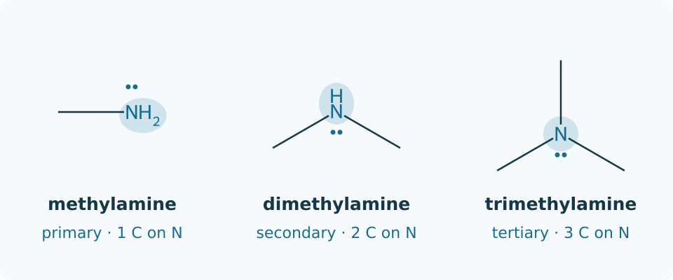
Primary, secondary and tertiary amines
A neutral amine N has three bonds and one lone pair, just like ammonia. Primary, secondary and tertiary count the carbons bonded to N, not the carbons in the molecule.
Try it: classify CH₃NHCH₂CH₃.
Secondary. Two carbon groups (methyl and ethyl) sit on N, plus one N–H. The total of three carbons doesn’t matter.
Protonation: the lone pair makes the new N–H bond
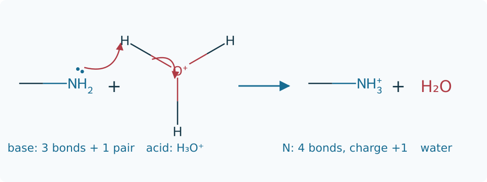
Methylamine takes a proton from hydronium
Two arrows: N pair → H, and H–O bond → O. Nitrogen goes from 3 bonds + 1 pair (neutral) to 4 bonds, no pair, +1. Net charge is +1 on both sides.
Try it: draw the reverse, CH₃NH₃⁺ + OH⁻. What forms?
CH₃NH₂ + H₂O. Hydroxide’s pair takes the H, and the N–H bond pair goes back to N as its lone pair. Net charge is zero on both sides.
Charge and classification are separate questions
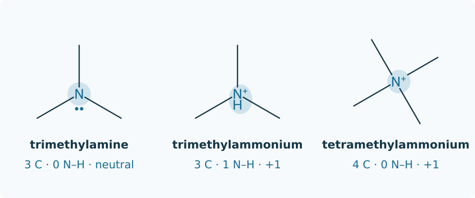
Tertiary amine, its conjugate acid and a quaternary ammonium ion
Protonating a tertiary amine gives a tertiary ammonium ion, not a quaternary one: it still has three carbons and now one N–H. Quaternary means four carbons on N. With no N–H to lose, it stays +1 at any pH.
Basicity: read the pKa of the conjugate acid
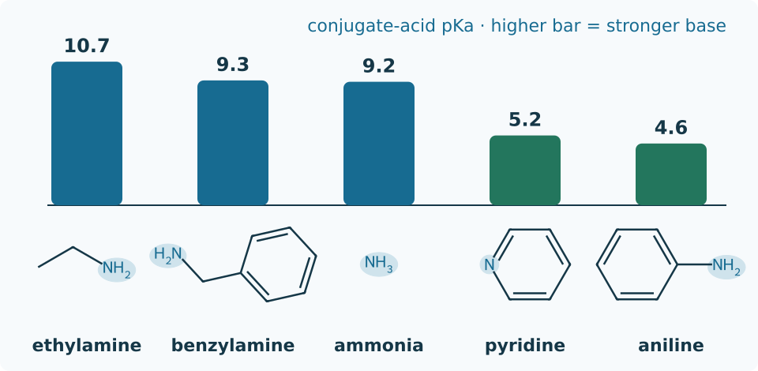
Conjugate-acid pKa values of five nitrogen bases
We rank bases by the pKa of BH⁺. A higher pKa means BH⁺ holds its proton tightly, so B is the stronger base. Ethylamine beats aniline by about six pKa units.
Which way does a proton transfer go?
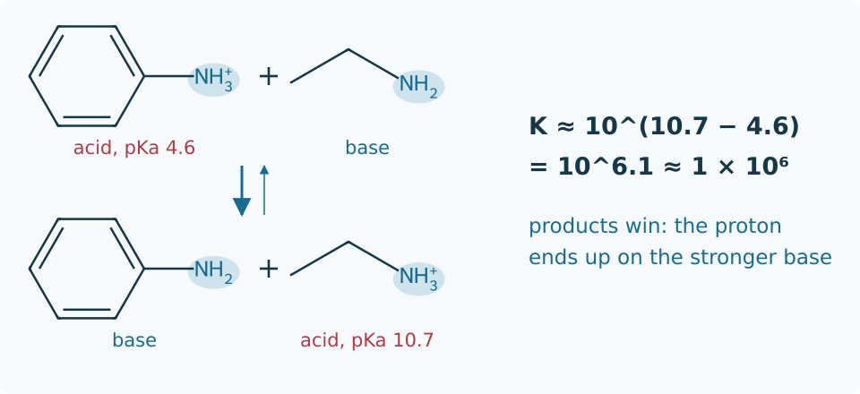
Anilinium gives its proton to ethylamine
K \approx 10^{\,\text{pKa(product acid)} \;-\; \text{pKa(reactant acid)}}
The equilibrium favours the side with the weaker acid (higher pKa).
Try it: estimate K for anilinium + NH₃ ⇌ aniline + NH₄⁺ (pKa 4.6 and 9.2).
K ≈ 10^(9.2 − 4.6) = 10^4.6 ≈ 4 × 10⁴. Ammonia takes the proton, so the products win.
Basicity is about equilibrium, not speed
a pKa comparison tells you…
it doesn’t tell you…
which side of a proton transfer is favoured
how fast the proton transfer happens
which base holds a proton more tightly
which N attacks a carbon electrophile fastest
roughly how much of each form at a given pH
effects of solvent, sterics or the leaving group
A strong base is often a good nucleophile, but nucleophilicity is a rate, and pKa alone can’t rank rates.
Amides: the pair is shared with C=O
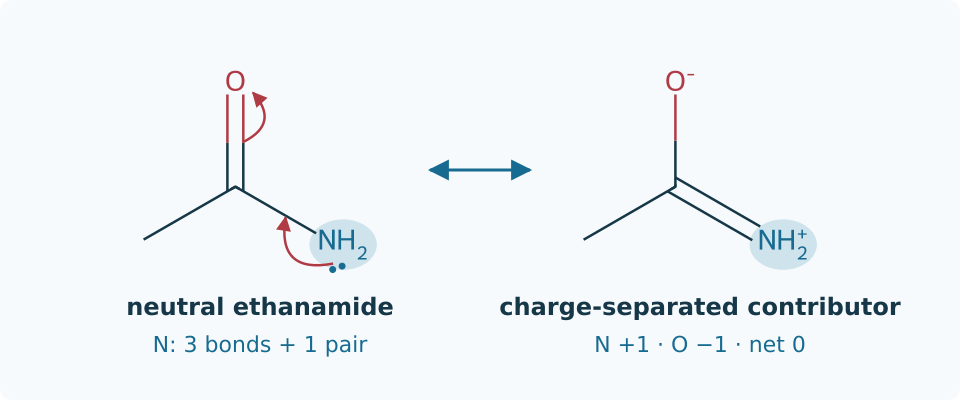
The amide nitrogen pair is shared with the carbonyl
The N pair delocalises into the carbonyl, giving the C–N bond partial double-bond character. Protonating N would cost that stabilisation, so amides are not basic like amines.
Try it: in CH₃C(O⁻)=NH₂⁺, check each charge. Is this a second molecule in equilibrium with ethanamide?
N has four bonds and no pair, so +1; O has one bond and three pairs, so −1; net 0. No: it’s a resonance contributor of the same molecule, with the same atoms in the same places.
Two nitrogens, two behaviours
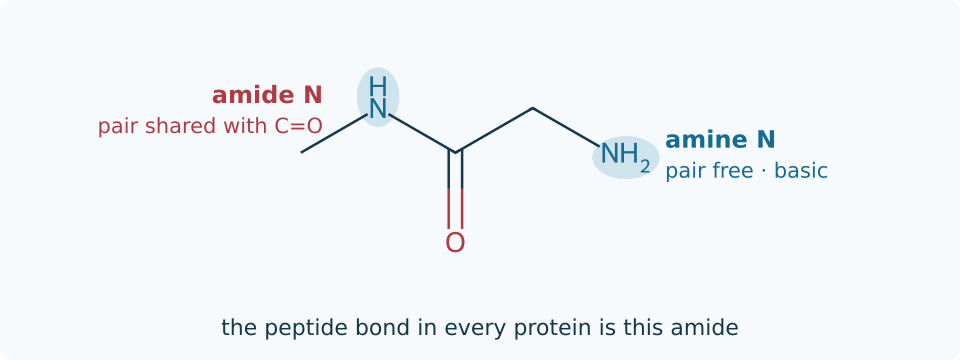
Two kinds of nitrogen in one molecule
Before predicting protonation, look at what each N is bonded to. Is the next atom a carbonyl carbon? Here only the NH₂ end is a real amine, so acid protonates that nitrogen.
Aniline: a ring can share the pair too
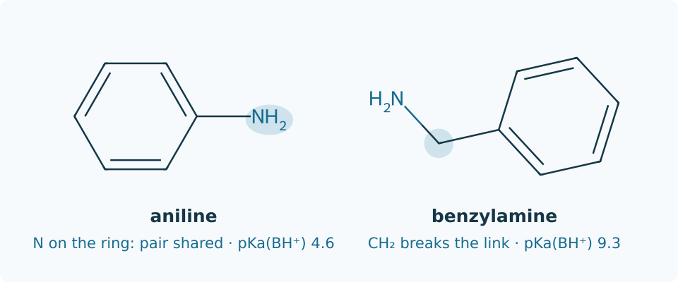
Aniline and benzylamine
In aniline the N sits directly on the ring, so its pair overlaps the ring’s π system and is less available. In benzylamine an sp³ CH₂ breaks that link, and the basicity is back near an ordinary amine.
What makes a ring aromatic
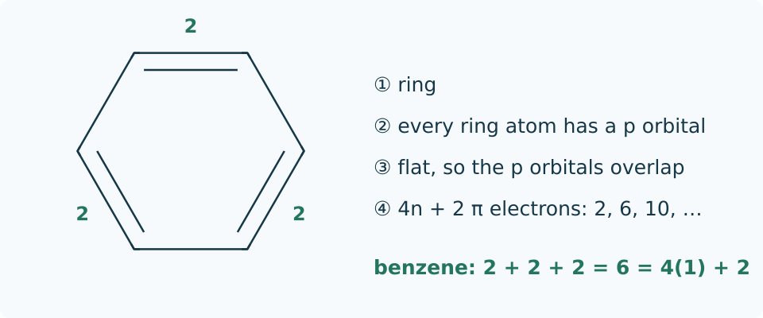
Benzene has six pi electrons
Aromatic rings are unusually stable: benzene resists the addition reactions that alkenes undergo easily. Check structure first, then count. We draw benzene with alternating double bonds, but the real π electrons are spread evenly around the ring.
A ring alone is not enough
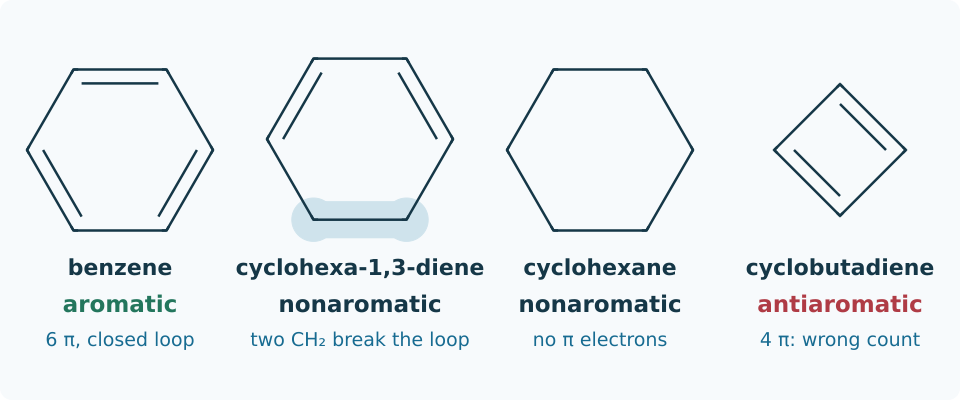
Aromatic, nonaromatic and antiaromatic rings
Nonaromatic: the loop of p orbitals is broken or absent. Antiaromatic: a complete loop with 4n π electrons, which is destabilising.
Try it: cyclohexane fails the aromatic test. Is it antiaromatic?
No, it’s nonaromatic. It has no π system at all. Antiaromatic needs a closed loop of p orbitals with the wrong count.
Pyridine: an extra pair, outside the ring
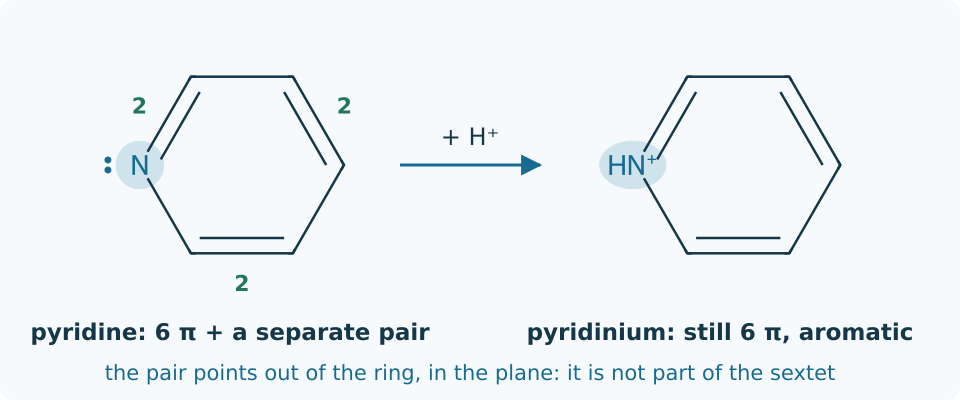
Pyridine keeps its lone pair outside the aromatic sextet
Pyridine’s N gives one electron to the π system, through its double bond. Its lone pair points out of the ring, in the plane. Protonating that pair leaves the sextet intact, so pyridine is a real base (pKa 5.2).
Try it: a student counts pyridine’s lone pair in the π system. What total would they get, and why is that a red flag?
Eight, which is 4n, not 4n + 2. The pair sits in an sp² orbital at right angles to the p orbitals, so it never joins the ring count.
Pyrrole: the pair is part of the sextet
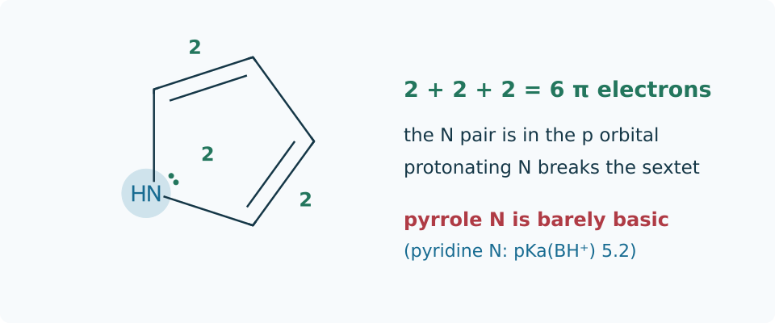
Pyrrole uses its nitrogen pair in the sextet
Pyrrole has only two C=C bonds, which supply four π electrons. The N lone pair supplies the other two. If N took a proton, that pair would leave the ring and the aromaticity would be lost.
Imidazole: one nitrogen of each kind
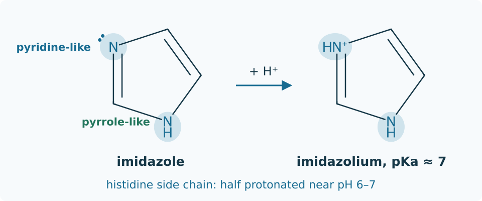
Imidazole has one pyridine-like and one pyrrole-like nitrogen
Imidazole is the side chain of histidine. Its pKa near 7 makes it the proton shuttle in many enzyme active sites.
Try it: which nitrogen takes the proton, and why?
The pyridine-like N (top left). Its pair is outside the sextet; the NH’s pair is part of the six π electrons.
Glycine: two sites, three charge states
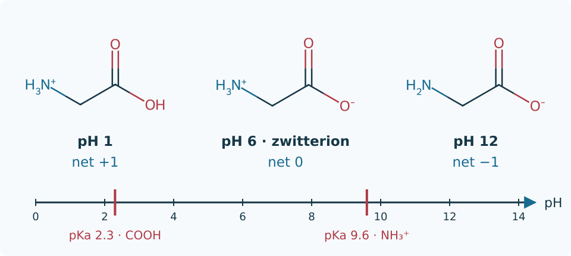
Glycine at low, middle and high pH
Treat each site separately: below its pKa a site is mostly protonated, above it mostly deprotonated. Between 2.3 and 9.6 glycine is a zwitterion: net zero, but with +1 on N and −1 on O.
Try it: draw what happens when the pH 6 form meets OH⁻.
H₃N⁺CH₂COO⁻ + OH⁻ → H₂NCH₂COO⁻ + H₂O. The ammonium loses its proton; net charge is −1 on both sides.
How much is protonated? Use the ratio
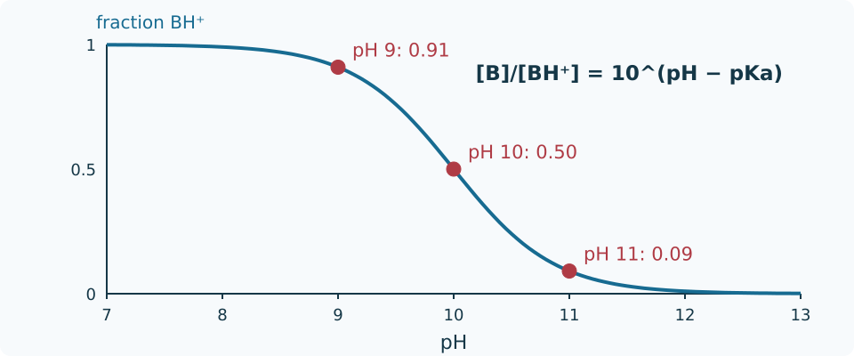
Fraction of an amine protonated, pKa 10
At pH 9, [B]/[BH⁺] = 10⁻¹ = 0.1, so the protonated fraction is 1/(1 + 0.1) ≈ 0.91. Each pH unit changes the ratio tenfold.
Try it: at pH = pKa, half is BH⁺. Does every molecule carry a charge of +½?
No. Each molecule is either B or BH⁺; half the population is in each form. Charges on single molecules come in whole units.
Mistakes we see every year
mistake
fix
counting all the carbons to classify an amine
count carbons on N
calling (CH₃)₃NH⁺ quaternary
quaternary means four carbons on N
quoting the amine’s N–H pKa for basicity
use the pKa of BH⁺
ranking reaction rates from pKa
pKa compares equilibria
treating an amide N like an amine N
check for a C=O next to N
counting pyridine’s lone pair in the sextet
its pair is in the plane, outside the π system
“a ring, so aromatic”
check the unbroken p-orbital loop first
“net zero, so no charges”
a zwitterion has +1 and −1
Summary
concept
key fact
amine N
3 bonds + 1 pair; protonated: 4 bonds, +1
classification
count carbons on N
base strength
higher pKa of BH⁺ = stronger base
proton transfer
K ≈ 10^(pKa product acid − pKa reactant acid)
amide, aniline
pair shared with π system: weak base
aromatic
flat, unbroken p-orbital loop, 4n + 2 π electrons
pyridine vs pyrrole
spare pair (basic) vs pair in sextet (barely basic)
amino acids
each site: protonated below its pKa
Next: reading structures from IR and NMR spectra (Day 21). Practice:exercises · self-check